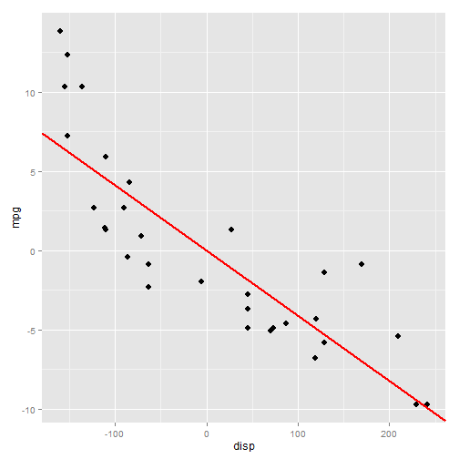

Regression demonstration
Documentation box to see the detailed instructions on how to work with this application.library(ggplot2)
mpg <- mtcars$mpg - mean(mtcars$mpg)
disp <- mtcars$disp - mean(mtcars$disp)
l <- lm(mpg ~ disp)
d <- data.frame(mpg, disp)
g <- ggplot(d, aes(disp, mpg))
g <- g + geom_point(size = 3) + geom_abline(intercept = 0, slope = coef(l)[2],
col = 'red', size = 1)
g
beta.mse <- mean((mpg - coef(l)[2] * disp)^2)
 MSE of the fitted regression line is 9.911.
Here you can:
coef(l)[2] value in the code mentioned above).